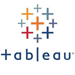
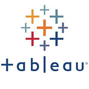

More about Mark Dodd
Throughout my career, I’ve worked closely with energy companies to oversee programming and project delivery. Leveraging data analytics and a talent for problem solving, I consistently deliver high quality results that drive efficiency, cost-savings, and continuous improvement.
The Post-Baccalaureate Diploma in Data Science and Analytics that I recently completed at the University of Calgary has given me an in depth understanding of statistics, programming, big data, regression, visualization and machine learning.
Additionally, my practical experience is complemented by a Bachelor of Science in Electrical Engineering, and proficiencies in Data Science, Data Cleaning, Data Mining, and Software Development.
Examples of my work can be found at my portfolio.
My CV is available for download and I’m always happy to expand my professional network. Reach out to me at one of the social networks linked below.
 
